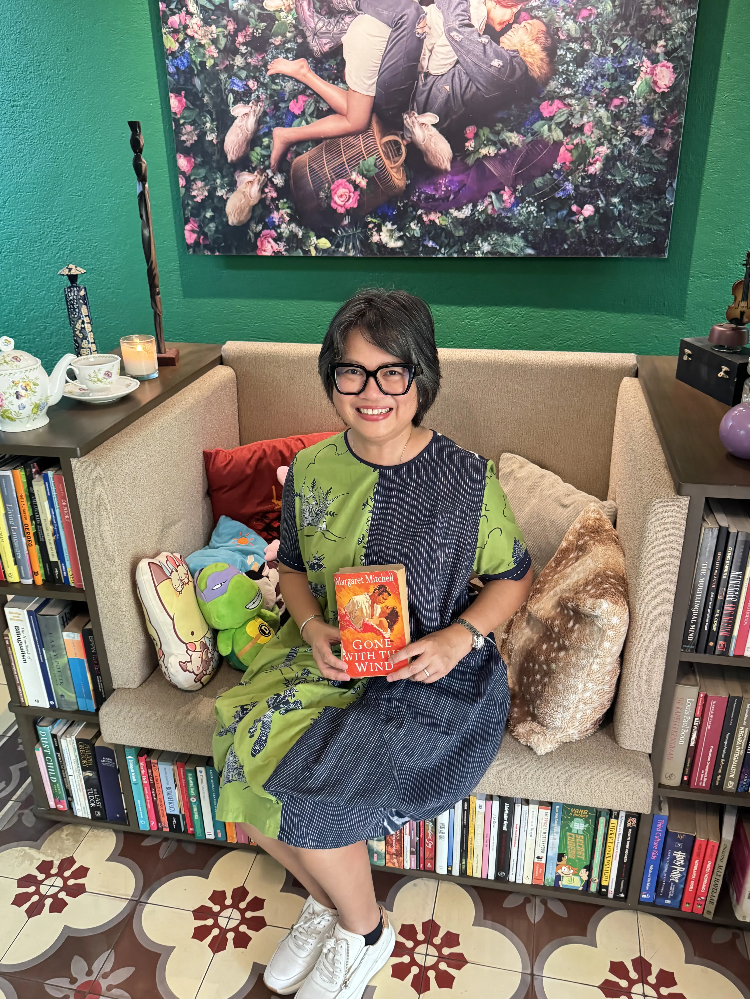
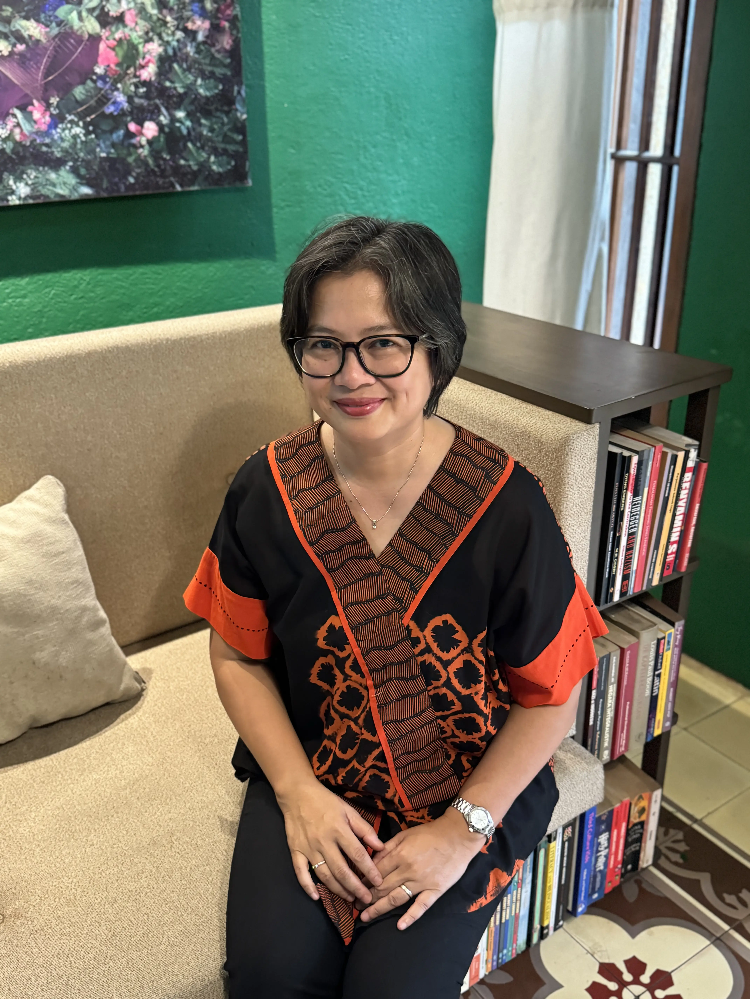
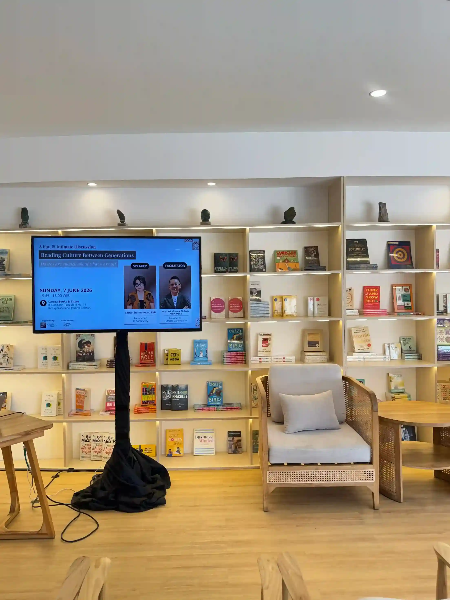
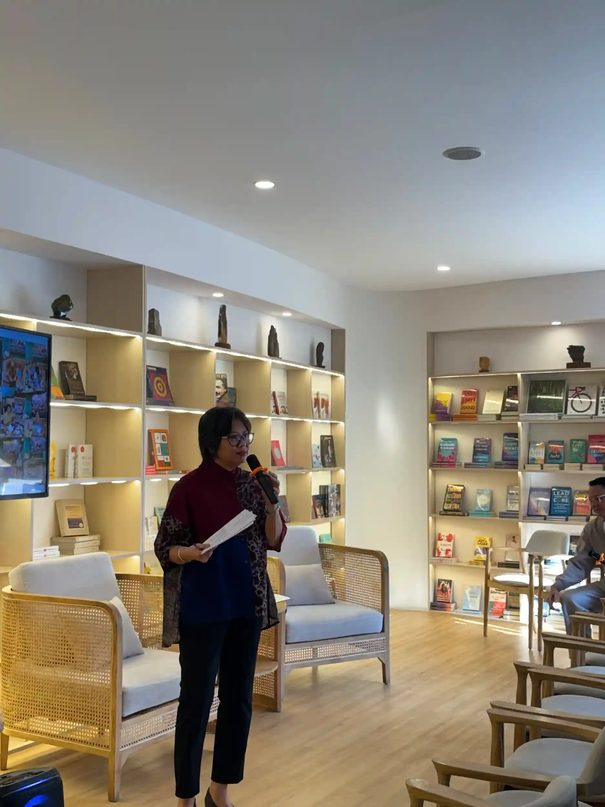
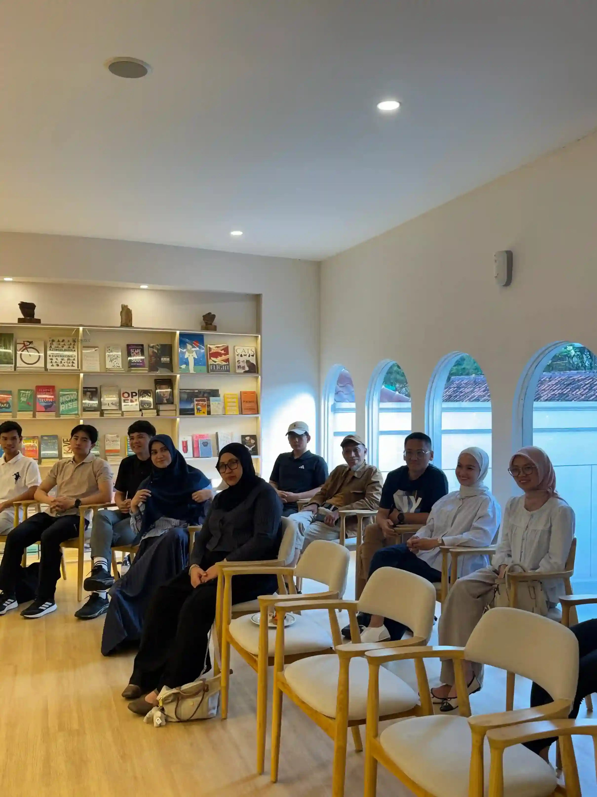
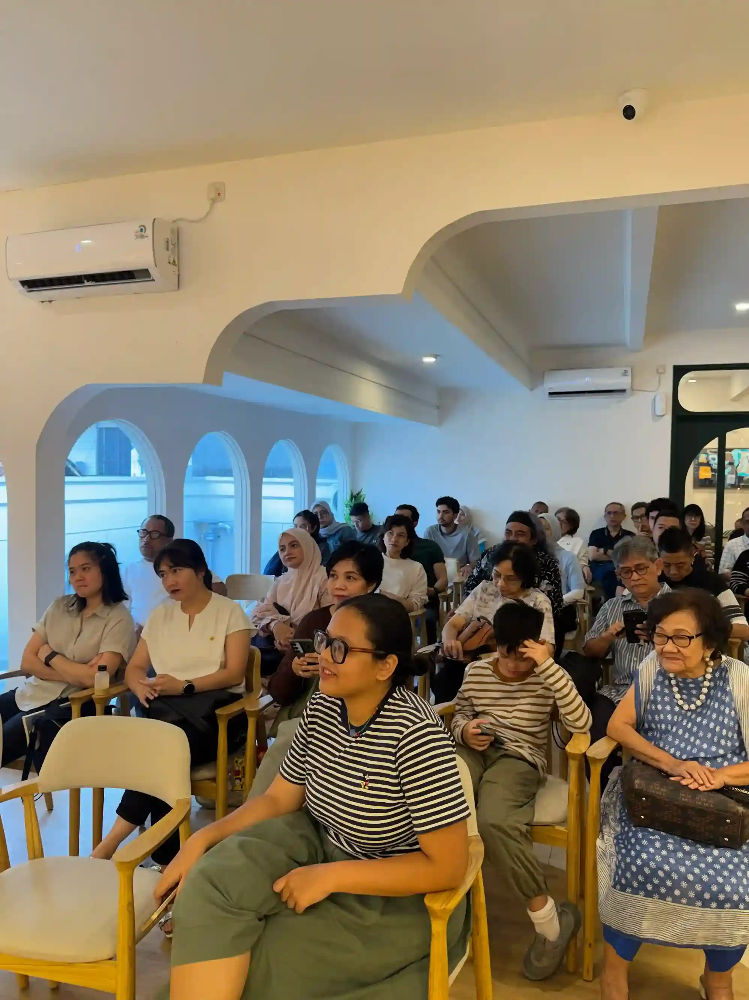

Stories & resources
Perspectives on reading, parenting, learning, and the questions that stay with us.

Parenting & reading

Reading ritual

Community

Early literacy

Learning culture

Reflection